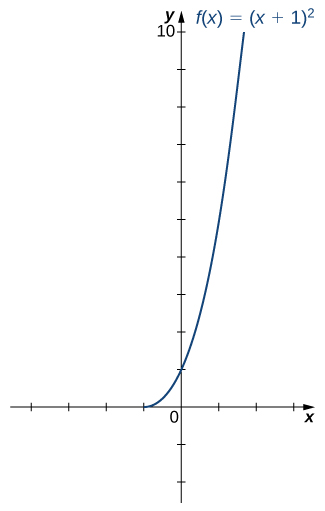

An inverse function reverses the operation done by a particular function. In other words, whatever a function does, the inverse function undoes it. In this section, we define an inverse function formally and state the necessary conditions for an inverse function to exist. We examine how to find an inverse function and study the relationship between the graph of a function and the graph of its inverse. Then we apply these ideas to define and discuss properties of the inverse trigonometric functions.
We begin with an example. Given a function \(f\) and an output \(y=f(x),\) we are often interested in finding what value or values \(x\) were mapped to \(y\) by \(f.\) For example, consider the function \(f(x)=x^3+4.\) Since any output \(y=x^3+4,\) we can solve this equation for \(x\) to find that the input is \(x=\sqrt[3]{y-3}.\) This equation defines \(x\) as a function of \(y.\) Denoting this function as \(f^{-1}\text{,}\) and writing \(x=f^{-1} (y)=\sqrt[3]{y-3},\) we see that for any \(x\) in the domain of \(f,f^{-1} (f(x))=f^{-1} (x^3+4)=x.\) Thus, this new function, \(f^{-1} ,\) “undid” what the original function \(f\) did. A function with this property is called the inverse function of the original function.
Given a function \(f\) with domain \(D\) and range \(R,\) its inverse function (if it exists) is the function \(f^{-1} \) with domain \(R\) and range \(D\) such that \(f^{-1} (y)=x\) if \(f(x)=y.\) In other words, for a function \(f\) and its inverse \(f^{-1} ,\)
Note that \(f^{-1} \) is read as “f inverse.” Here, the \(-1\) is not used as an exponent and \(f^{-1} (x)\neq 1/f(x).\)Figure 1.4.2 shows the relationship between the domain and range of \(f\) and the domain and range of \(f^{-1} .\)
Figure1.4.2.Given a function \(f\) and its inverse \(f^{-1} ,f^{-1} (y)=x\) if and only if \(f(x)=y.\) The range of \(f\) becomes the domain of \(f^{-1} \) and the domain of \(f\) becomes the range of \(f^{-1} .\)
Recall that a function has exactly one output for each input. Therefore, to define an inverse function, we need to map each input to exactly one output. For example, let’s try to find the inverse function for \(f(x)=x^2.\) Solving the equation \(y=x^2\) for \(x,\) we arrive at the equation \(x=\pm \sqrt{y}.\) This equation does not describe \(x\) as a function of \(y\) because there are two solutions to this equation for every \(y\gt 0.\) The problem with trying to find an inverse function for \(f(x)=x^2\) is that two inputs are sent to the same output for each output \(y\gt 0.\) The function \(f(x)=x^3+4\) discussed earlier did not have this problem. For that function, each input was sent to a different output. A function that sends each input to a different output is called a one-to-one function.
One way to determine whether a function is one-to-one is by looking at its graph. If a function is one-to-one, then no two inputs can be sent to the same output. Therefore, if we draw a horizontal line anywhere in the \(xy\)-plane, according to the horizontal line test, it cannot intersect the graph more than once. We note that the horizontal line test is different from the vertical line test. The vertical line test determines whether a graph is the graph of a function. The horizontal line test determines whether a function is one-to-one (Figure 1.4.5).
Figure1.4.5.(a) The function \(f(x)=x^2\) is not one-to-one because it fails the horizontal line test. (b) The function \(f(x)=x^3\) is one-to-one because it passes the horizontal line test.
We can now consider one-to-one functions and show how to find their inverses. Recall that a function maps elements in the domain of \(f\) to elements in the range of \(f.\) The inverse function maps each element from the range of \(f\) back to its corresponding element from the domain of \(f.\) Therefore, to find the inverse function of a one-to-one function \(f,\) given any \(y\) in the range of \(f,\) we need to determine which \(x\) in the domain of \(f\) satisfies \(f(x)=y.\) Since \(f\) is one-to-one, there is exactly one such value \(x.\) We can find that value \(x\) by solving the equation \(f(x)=y\) for \(x.\) Doing so, we are able to write \(x\) as a function of \(y\) where the domain of this function is the range of \(f\) and the range of this new function is the domain of \(f.\) Consequently, this function is the inverse of \(f,\) and we write \(x=f^{-1} (y).\) Since we typically use the variable \(x\) to denote the independent variable and \(y\) to denote the dependent variable, we often interchange the roles of \(x\) and \(y,\) and write \(y=f^{-1} (x).\) Representing the inverse function in this way is also helpful later when we graph a function \(f\) and its inverse \(f^{-1} \) on the same axes.
Since the domain of \(f\) is \((-\infty ,\infty ),\) the range of \(f^{-1} \) is \((-\infty ,\infty ).\) Since the range of \(f\) is \((-\infty ,\infty ),\) the domain of \(f^{-1} \) is \((-\infty ,\infty ).\)
Note that for \(f^{-1} (x)\) to be the inverse of \(f(x),\) both \(f^{-1} (f(x))=x\) and \(f(f^{-1} (x))=x\) for all \(x\) in the domain of the inside function.
Let’s consider the relationship between the graph of a function \(f\) and the graph of its inverse. Consider the graph of \(f\) shown in Figure 1.4.11 and a point \((a,b)\) on the graph. Since \(b=f(a),\) then \(f^{-1} (b)=a.\) Therefore, when we graph \(f^{-1} ,\) the point \((b,a)\) is on the graph. As a result, the graph of \(f^{-1} \) is a reflection of the graph of \(f\) about the line \(y=x.\)
Figure1.4.11.(a) The graph of this function \(f\) shows point \((a,b)\) on the graph of \(f.\) (b) Since \((a,b)\) is on the graph of \(f,\) the point \((b,a)\) is on the graph of \(f^{-1} .\) The graph of \(f^{-1} \) is a reflection of the graph of \(f\) about the line \(y=x.\)
Example1.4.12Sketching Graphs of Inverse Functions.
For the graph of \(f\) in the following image, sketch a graph of \(f^{-1} \) by sketching the line \(y=x\) and using symmetry. Identify the domain and range of \(f^{-1} .\)
Reflect the graph about the line \(y=x.\) The domain of \(f^{-1} \) is \([0,\infty ).\) The range of \(f^{-1} \) is \([-2,\infty ).\) By using the preceding strategy for finding inverse functions, we can verify that the inverse function is \(f^{-1} (x)=x^2-2,\) as shown in the graph.
As we have seen, \(f(x)=x^2\) does not have an inverse function because it is not one-to-one. However, we can choose a subset of the domain of \(f\) such that the function is one-to-one. This subset is called a restricted domain. By restricting the domain of \(f,\) we can define a new function \(g\) such that the domain of \(g\) is the restricted domain of \(f\) and \(g(x)=f(x)\) for all \(x\) in the domain of \(g.\) Then we can define an inverse function for \(g\) on that domain. For example, since \(f(x)=x^2\) is one-to-one on the interval \([0,\infty ),\) we can define a new function \(g\) such that the domain of \(g\) is \([0,\infty )\) and \(g(x)=x^2\) for all \(x\) in its domain. Since \(g\) is a one-to-one function, it has an inverse function, given by the formula \(g^{-1}(x)=\sqrt{x}.\) On the other hand, the function \(f(x)=x^2\) is also one-to-one on the domain \((-\infty ,0].\) Therefore, we could also define a new function \(h\) such that the domain of \(h\) is \((-\infty ,0]\) and \(h(x)=x^2\) for all \(x\) in the domain of \(h.\) Then \(h\) is a one-to-one function and must also have an inverse. Its inverse is given by the formula \(h^{-1}(x)=-\sqrt{x}\) (Figure 1.4.14).
Figure1.4.14.(a) For \(g(x)=x^2\) restricted to \([0,\infty ),g^{-1}(x)=\sqrt{x}.\) (b) For \(h(x)=x^2\) restricted to \((-\infty ,0],h^{-1}(x)=-\sqrt{x}.\)
Show that \(f\) is one-to-one on the restricted domain \([-1,\infty ).\) Determine the domain and range for the inverse of \(f\) on this restricted domain and find a formula for \(f^{-1} .\)
The graph of \(f\) is the graph of \(y=x^2\) shifted left 1 unit. Since there exists a horizontal line intersecting the graph more than once, \(f\) is not one-to-one.
On the interval \([-1,\infty ), f\) is one-to-one.

The domain and range of \(f^{-1} \) are given by the range and domain of \(f,\) respectively. Therefore, the domain of \(f^{-1} \) is \([0,\infty )\) and the range of \(f^{-1} \) is \([-1,\infty ).\) To find a formula for \(f^{-1} ,\) solve the equation \(y=(x+1)^2\) for \(x.\) If \(y=(x+1)^2,\) then \(x=-1\pm \sqrt{y}.\) Since we are restricting the domain to the interval where \(x\geq -1,\) we need \(\pm \sqrt{y}\geq 0.\) Therefore, \(x=-1+\sqrt{y}.\) Interchanging \(x\) and \(y,\) we write \(y=-1+\sqrt{x}\) and conclude that \(f^{-1} (x)=-1+\sqrt{x}.\)
Consider \(f(x)=1/x^2\) restricted to the domain \((-\infty ,0).\) Verify that \(f\) is one-to-one on this domain. Determine the domain and range of the inverse of \(f\) and find a formula for \(f^{-1} .\)
The domain of \(f^{-1} \) is \((0,\infty ).\) The range of \(f^{-1} \) is \((-\infty ,0).\) The inverse function is given by the formula \(f^{-1} (x)=-1/\sqrt{x}.\)
The six basic trigonometric functions are periodic, and therefore they are not one-to-one. However, if we restrict the domain of a trigonometric function to an interval where it is one-to-one, we can define its inverse. Consider the sine function. The sine function is one-to-one on an infinite number of intervals, but the standard convention is to restrict the domain to the interval \([- \frac{\pi}{2},\frac{\pi}{2}].\) By doing so, we define the inverse sine function on the domain \([-1,1]\) such that for any \(x\) in the interval \([-1,1],\) the inverse sine function tells us which angle \(\theta \) in the interval \([-\frac{\pi}{2},\frac{\pi}{2}]\) satisfies \(\sin\,\theta =x.\) Similarly, we can restrict the domains of the other trigonometric functions to define inverse trigonometric functions, which are functions that tell us which angle in a certain interval has a specified trigonometric value.
The inverse sine function, denoted \(\sin^{-1} \) or arcsin, and the inverse cosine function, denoted \(\cos^{-1}\) or arccos, are defined on the domain \(D=\{x|-1\leq x\leq 1\}\) as follows:
\begin{align*}
\sin^{-1} (x) \amp =y \text{ if and only if } \sin(y)=x \text{ and } -\frac{\pi}{2}\leq y\leq \frac{\pi}{2} \\
\cos^{-1}(x)\amp =y \text{ if and only if } \text{ cos }(y)=x \text{ and } 0\leq y\leq \pi.
\end{align*}
The inverse tangent function, denoted \(\tan^{-1} \) or arctan, and inverse cotangent function, denoted \(\cot^{-1} \) or arccot, are defined on the domain \(D=\{x|-\infty \lt x\lt \infty \}\) as follows:
\begin{gather*}
\tan^{-1} (x)=y \text{ if and only if } \text{ tan }(y)=x \text{ and } -\frac{\pi}{2}\lt y\lt \frac{\pi}{2};\\
\cot^{-1} (x)=y \text{ if and only if } \text{ cot }(y)=x \text{ and } 0\lt y\lt \pi.
\end{gather*}
The inverse cosecant function, denoted \(\csc^{-1} \) or arccsc, and inverse secant function, denoted \(\sec^{-1} \) or arcsec, are defined on the domain \(D=\{x||x|\geq \}\) as follows:
\begin{gather*}
\csc^{-1} (x)=y \text{ if and only if } \text{ csc }(y)=x \text{ and } -\frac{\pi}{2}\leq y\leq \frac{\pi}{2},y\neq 0;\\
\sec^{-1} (x)=y \text{ if and only if } \text{ sec }(y)=x \text{ and } 0\leq y\leq \pi,y\neq \pi/2.
\end{gather*}
To graph the inverse trigonometric functions, we use the graphs of the trigonometric functions restricted to the domains defined earlier and reflect the graphs about the line \(y=x\) (Figure 1.4.18).
Figure1.4.18.The graph of each of the inverse trigonometric functions is a reflection about the line \(y=x\) of the corresponding restricted trigonometric function.
When evaluating an inverse trigonometric function, the output is an angle. For example, to evaluate \(\cos^{-1}(\frac{1}{2}),\) we need to find an angle \(\theta \) such that \(\text{ cos }\,\theta =\frac{1}{2}.\) Clearly, many angles have this property. However, given the definition of \(\cos^{-1},\) we need the angle \(\theta \) that not only solves this equation, but also lies in the interval \([0,\pi].\) We conclude that \(\cos^{-1}(\frac{1}{2})=\frac{\pi}{3}.\)
We now consider a composition of a trigonometric function and its inverse. For example, consider the two expressions \(\sin(\sin^{-1} (\frac{\sqrt{2}}{2}))\) and \(\sin^{-1} (\sin(\pi)).\) For the first one, we simplify as follows:
The inverse function is supposed to “undo” the original function, so why isn’t \(\sin^{-1} (\sin(\pi))=\pi?\) Recalling our definition of inverse functions, a function \(f\) and its inverse \(f^{-1} \) satisfy the conditions \(f(f^{-1} (y))=y\) for all \(y\) in the domain of \(f^{-1} \) and \(f^{-1} (f(x))=x\) for all \(x\) in the domain of \(f,\) so what happened here? The issue is that the inverse sine function, \(\sin^{-1} ,\) is the inverse of the restricted sine function defined on the domain \([-\frac{\pi}{2},\frac{\pi}{2}].\) Therefore, for \(x\) in the interval \([-\frac{\pi}{2},\frac{\pi}{2}]\text{ , }\) it is true that \(\sin^{-1} (\sin\,x)=x.\) However, for values of \(x\) outside this interval, the equation does not hold, even though \(\sin^{-1} (\sin\,x)\) is defined for all real numbers \(x.\)
What about \(\sin(\sin^{-1} y)?\) Does that have a similar issue? The answer is no. Since the domain of \(\sin^{-1} \) is the interval \([-1,1],\) we conclude that \(\sin(\sin^{-1} y)=y\) if \(-1\leq y\leq 1\) and the expression is not defined for other values of \(y.\) To summarize,
Evaluating \(\sin^{-1} (-\sqrt{3}/2)\) is equivalent to finding the angle \(\theta \) such that \(\sin\,\theta =-\sqrt{3}/2\) and \(-\pi/2\leq \theta \leq \pi/2.\) The angle \(\theta =-\pi/3\) satisfies these two conditions. Therefore, \(\sin^{-1} (-\sqrt{3}/2)=-\pi/3.\)
First we use the fact that \(\tan^{-1} (-1/\sqrt{3})=-\pi/6.\) Then \(\text{ tan }(\pi/6)=-1/\sqrt{3}.\) Therefore, \(\text{ tan }(\tan^{-1} (-1/\sqrt{3}))=-1/\sqrt{3}.\)
To evaluate \(\cos^{-1}(\text{ cos }(5\pi/4)),\) first use the fact that \(\text{ cos }(5\pi/4)=-\sqrt{2}/2.\) Then we need to find the angle \(\theta \) such that \(\text{ cos }(\theta )=-\sqrt{2}/2\) and \(0\leq \theta \leq \pi.\) Since \(3\pi/4\) satisfies both these conditions, we have \(\text{ cos }(\cos^{-1}(5\pi/4))=\text{ cos }(\cos^{-1}(-\sqrt{2}/2))=3\pi/4.\)
Since \(\text{ cos }(2\pi/3)=-1/2,\) we need to evaluate \(\sin^{-1} (-1/2).\) That is, we need to find the angle \(\theta \) such that \(\sin(\theta )=-1/2\) and \(-\pi/2\leq \theta \leq \pi/2.\) Since \(-\pi/6\) satisfies both these conditions, we can conclude that \(\sin^{-1} (\text{ cos }(2\pi/3))=\sin^{-1} (-1/2)=-\pi/6.\)
Note1.4.21Project: The Maximum Value of a Function.
In many areas of science, engineering, and mathematics, it is useful to know the maximum value a function can obtain, even if we don’t know its exact value at a given instant. For instance, if we have a function describing the strength of a roof beam, we would want to know the maximum weight the beam can support without breaking. If we have a function that describes the speed of a train, we would want to know its maximum speed before it jumps off the rails. Safe design often depends on knowing maximum values.
This project describes a simple example of a function with a maximum value that depends on two equation coefficients. We will see that maximum values can depend on several factors other than the independent variable \(x\text{.}\)
Using a graphing calculator or other graphing device, estimate the \(x\)- and \(y\)-values of the maximum point for the graph (the first such point where \(x\) \gt 0). It may be helpful to express the \(x\)-value as a multiple of \pi.
Now consider other graphs of the form \(y=A\,\sin\,x+B\,\text{ cos }\,x\) for various values of \(A\) and \(B\text{.}\) Sketch the graph when \(A\) = 2 and \(B\) = 1, and find the \(x\)- and \(y\)-values for the maximum point. (Remember to express the \(x\)-value as a multiple of \pi, if possible.) Has it moved?
The formula for the \(x\)-values is a little harder. The most helpful points from the table are \((1,1),(1,\sqrt{3}),(\sqrt{3},1).\) (Hint: Consider inverse trigonometric functions.)
If you found formulas for parts (5) and (6), show that they work together. That is, substitute the \(x\)-value formula you found into \(y=A\,\sin\,x+B\,\text{ cos }\,x\) and simplify it to arrive at the \(y\)-value formula you found.
For a function to have an inverse, the function must be one-to-one. Given the graph of a function, we can determine whether the function is one-to-one by using the horizontal line test.
If a function is not one-to-one, we can restrict the domain to a smaller domain where the function is one-to-one and then define the inverse of the function on the smaller domain.
For a function \(f\) and its inverse \(f^{-1} ,f(f^{-1} (x))=x\) for all \(x\) in the domain of \(f^{-1} \) and \(f^{-1} (f(x))=x\) for all \(x\) in the domain of \(f.\)
!["An image of two bubbles. The first bubble is orange and has two labels: the top label is “Domain of f” and the bottom label is “Range of f inverse”. Within this bubble is the variable “x”. An orange arrow with the label “f” points from this bubble to the second bubble. The second bubble is blue and has two labels: the top label is “range of f” and the bottom label is “domain of f inverse”. Within this bubble is the variable “y”. A blue arrow with the label “f inverse” points from this bubble to the first bubble."](external/CNX_Calc_Figure_01_04_001.jpg)
!["An image of two graphs. Both graphs have an x axis that runs from -3 to 3 and a y axis that runs from -3 to 4. The first graph is of the function “f(x) = x squared”, which is a parabola. The function decreases until it hits the origin, where it begins to increase. The x intercept and y intercept are both at the origin. There are two orange horizontal lines also plotted on the graph, both of which run through the function at two points each. The second graph is of the function “f(x) = x cubed”, which is an increasing curved function. The x intercept and y intercept are both at the origin. There are three orange lines also plotted on the graph, each of which only intersects the function at one point."](external/CNX_Calc_Figure_01_04_002.jpg)
!["An image of a graph. The x axis runs from -3 to 11 and the y axis runs from -3 to 11. The graph is of a step function which contains 10 horizontal steps. Each steps starts with a closed circle and ends with an open circle. The first step starts at the origin and ends at the point (1, 0). The second step starts at the point (1, 1) and ends at the point (1, 2). Each of the following 8 steps starts 1 unit higher in the y direction than where the previous step ended. The tenth and final step starts at the point (9, 9) and ends at the point (10, 9)"](external/CNX_Calc_Figure_01_04_003.jpg)
!["An image of a graph. The x axis runs from -3 to 6 and the y axis runs from -3 to 6. The graph is of the function “f(x) = (1/x)”, a curved decreasing function. The graph of the function starts right below the x axis in the 4th quadrant and begins to decreases until it comes close to the y axis. The graph keeps decreasing as it gets closer and closer to the y axis, but never touches it due to the vertical asymptote. In the first quadrant, the graph of the function starts close to the y axis and keeps decreasing until it gets close to the x axis. As the function continues to decreases it gets closer and closer to the x axis without touching it, where there is a horizontal asymptote."](external/CNX_Calc_Figure_01_04_004.jpg)
!["An image of a graph. The x axis runs from -3 to 11 and the y axis runs from -3 to 11. The graph is of a step function which contains 10 horizontal steps. Each steps starts with a closed circle and ends with an open circle. The first step starts at the origin and ends at the point (1, 0). The second step starts at the point (1, 1) and ends at the point (1, 2). Each of the following 8 steps starts 1 unit higher in the y direction than where the previous step ended. The tenth and final step starts at the point (9, 9) and ends at the point (10, 9). There are also two horizontal orange lines plotted on the graph, each of which run through an entire step of the function."](external/CNX_Calc_Figure_01_04_005.jpg)
!["An image of a graph. The x axis runs from -3 to 6 and the y axis runs from -3 to 6. The graph is of the function “f(x) = (1/x)”, a curved decreasing function. The graph of the function starts right below the x axis in the 4th quadrant and begins to decreases until it comes close to the y axis. The graph keeps decreasing as it gets closer and closer to the y axis, but never touches it due to the vertical asymptote. In the first quadrant, the graph of the function starts close to the y axis and keeps decreasing until it gets close to the x axis. As the function continues to decreases it gets closer and closer to the x axis without touching it, where there is a horizontal asymptote. There are also three horizontal orange lines plotted on the graph, each of which only runs through the function at one point."](external/CNX_Calc_Figure_01_04_006.jpg)
!["An image of two graphs. The first graph is of “y = f(x)”, which is a curved increasing function, that increases at a faster rate as x increases. The point (a, b) is on the graph of the function in the first quadrant. The second graph also graphs “y = f(x)” with the point (a, b), but also graphs the function “y = f inverse (x)”, an increasing curved function, that increases at a slower rate as x increases. This function includes the point (b, a). In addition to the two functions, there is a diagonal dotted line potted with the equation “y =x”, which shows that “f(x)” and “f inverse (x)” are mirror images about the line “y =x”."](external/CNX_Calc_Figure_01_04_017.jpg)
!["An image of a graph. The x axis runs from -2 to 2 and the y axis runs from -2 to 2. The graph is of two functions. The first function is “f(x) = square root of (x +2)”, an increasing curved function. The function starts at the point (-2, 0). The x intercept is at (-2, 0) and the y intercept is at the approximate point (0, 1.4). The second function is “f inverse (x) = (x squared) -2”, an increasing curved function that starts at the point (0, -2). The x intercept is at the approximate point (1.4, 0) and the y intercept is at the point (0, -2). In addition to the two functions, there is a diagonal dotted line potted with the equation “y =x”, which shows that “f(x)” and “f inverse (x)” are mirror images about the line “y =x”."](external/CNX_Calc_Figure_01_04_010.jpg)
!["An image of a graph. The x axis runs from -3 to 4 and the y axis runs from -3 to 5. The graph is of two functions. The first function is “f(x) = 2x +3”, an increasing straight line function. The function has an x intercept at (-1.5, 0) and a y intercept at (0, 3). The second function is “f inverse (x) = (x - 3)/2”, an increasing straight line function, which increases at a slower rate than the first function. The function has an x intercept at (3, 0) and a y intercept at (0, -1.5). In addition to the two functions, there is a diagonal dotted line potted with the equation “y =x”, which shows that “f(x)” and “f inverse (x)” are mirror images about the line “y =x”."](external/CNX_Calc_Figure_01_04_011.jpg)
!["An image of two graphs. Both graphs have an x axis that runs from -2 to 5 and a y axis that runs from -2 to 5. The first graph is of two functions. The first function is “g(x) = x squared”, an increasing curved function that starts at the point (0, 0). This function increases at a faster rate for larger values of x. The second function is “g inverse (x) = square root of x”, an increasing curved function that starts at the point (0, 0). This function increases at a slower rate for larger values of x. The first function is “h(x) = x squared”, a decreasing curved function that ends at the point (0, 0). This function decreases at a slower rate for larger values of x. The second function is “h inverse (x) = -(square root of x)”, an increasing curved function that starts at the point (0, 0). This function decreases at a slower rate for larger values of x. In addition to the two functions, there is a diagonal dotted line potted with the equation “y =x”, which shows that “f(x)” and “f inverse (x)” are mirror images about the line “y =x”."](external/CNX_Calc_Figure_01_04_012.jpg)
!["An image of six graphs. The first graph is of the function “f(x) = sin inverse(x)”, which is an increasing curve function. The function starts at the point (-1, -(pi/2)) and increases until it ends at the point (1, (pi/2)). The x intercept and y intercept are at the origin. The second graph is of the function “f(x) = cos inverse (x)”, which is a decreasing curved function. The function starts at the point (-1, pi) and decreases until it ends at the point (1, 0). The x intercept is at the point (1, 0). The y intercept is at the point (0, (pi/2)). The third graph is of the function f(x) = tan inverse (x)”, which is an increasing curve function. The function starts close to the horizontal line “y = -(pi/2)” and increases until it comes close the “y = (pi/2)”. The function never intersects either of these lines, it always stays between them - they are horizontal asymptotes. The x intercept and y intercept are both at the origin. The fourth graph is of the function “f(x) = cot inverse (x)”, which is a decreasing curved function. The function starts slightly below the horizontal line “y = pi” and decreases until it gets close the x axis. The function never intersects either of these lines, it always stays between them - they are horizontal asymptotes. The fifth graph is of the function “f(x) = csc inverse (x)”, a decreasing curved function. The function starts slightly below the x axis, then decreases until it hits a closed circle point at (-1, -(pi/2)). The function then picks up again at the point (1, (pi/2)), where is begins to decrease and approach the x axis, without ever touching the x axis. There is a horizontal asymptote at the x axis. The sixth graph is of the function “f(x) = sec inverse (x)”, an increasing curved function. The function starts slightly above the horizontal line “y = (pi/2)”, then increases until it hits a closed circle point at (-1, pi). The function then picks up again at the point (1, 0), where is begins to increase and approach the horizontal line “y = (pi/2)”, without ever touching the line. There is a horizontal asymptote at the “y = (pi/2)”."](external/CNX_Calc_Figure_01_04_018.jpg)
![Runestone Academy logo]()
![MathJax logo]()